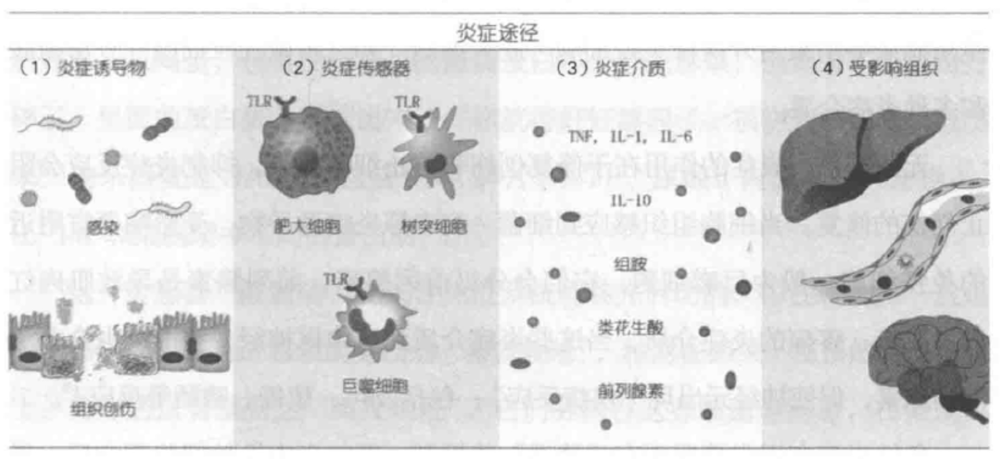

1 炎症的起源
没有炎症就没有慢性病
氧化应激是过多自由基造成的细胞损伤。
身体出现的所有慢性病都可能与身体氧化应激有关，出现感染或者局部炎症，然后免疫系统“接手”把它继续“做大做强”，最终导致更严重的健康问题。
炎症是身体的防御机制，作用在于发现并清除有害的外源物质，启动身体自愈过程：
- 急性炎症：一般源于微生物或者毒素入侵，或者是其他身体创伤。
- 慢性炎症：长期缓慢进展的炎症，可持续数月到多年的时间。
急性炎症有“消退”机制，一般有其生理意义，对健康有积极帮助（消灭感染源，组织修复）。
急性炎症持续下去变成慢性炎症，则对健康只剩下消极影响。
慢性炎症与糖尿病，癌症，心血管疾病，神经退行性疾病，自身免疫系统疾病，衰老等都有密切关系。

产生路径：
- 炎症诱导物
- 诱导物包括外来物质（pathogen-associated molecular patterns - PAMP）如细菌、真菌等微生物组成的片段物质
- 身体的内源物质（damage/danger-associated molecular patterns - DAMP）如DNA碎片、ATP、尿酸等
- 细胞传感器
- 当传感器被触动
- 先天性免疫系统首先启动，中性粒细胞最先到达感染或受损现场，内吞细菌等病原，分泌炎症介质，导致痒痕和疼痛等。
- 先天性免疫系统不能解决，则适应性免疫系统参与，免疫T细胞和B细胞参与清除病原体。
- 再持续下去急性炎症就会发展成为慢性炎症。
- 免疫细胞通过“模式识别受体”（pattern-recognition receptors - PRR）作为传感器识别诱导物。
- 先天性免疫细胞的PRR很多时候只会感应细菌和细胞的组成部分，所以就算没有细菌感染，但血液中的细菌残留物，细胞损伤残留物也会触动传感器。
- TLR4是免疫细胞表面受体，当接触到细菌的脂多糖（LPS）时，会启动细胞内的NF-κB转录因子路径，产生致炎症细胞因子。
这里的细菌LPS是炎症诱导物PAMP，TLR4是传感器，致炎症细胞因子是炎症介质。
除了PAMP，饱和脂肪也可以通过TLR4受体启动炎症反应。
- NLRP3是免疫细胞中的受体，当接触到细菌来源的PAMP和损坏细胞的DAMP时，也会启动NF-κB转录因子路径，产生炎症细胞因子。
当身体的氧化应激严重，过量的自由基（ROS）会增加NPLRP3的表达。
因此，就算受损细胞没有变化，氧化应激会导致更多的致炎症细胞因子。
- 炎症介质
- 包括致炎症细胞因子和消退炎症细胞因子，是细胞间信息传递的信号。
可以分几大类：
- 白细胞介素（interleukin - IL）
- 干扰素（interferon - IFN）
- 肿瘤坏死因子（tumor necrosis factor - TNF）
- 集落刺激因子（colony stimulating factor - CSF）
- 趋化因子（chemokine）
- 不同的炎症诱导物导致不同的炎症路径。
- 病毒感染导致受感染细胞分泌IFN-α、IFN-β，唤起细胞毒性淋巴细胞。
- 寄生虫感染导致肥大细胞和嗜碱性粒细胞分泌组胺、IL-4，IL-5、IL-13等。
- 受影响的器官组织
- 类风湿关节炎（RA）患者的氧化应激状况严重。
研究发现，类风湿关节炎越严重，氧化应激指数和炎症指标都更高。
- 炎症导致心血管疾病的机制：
- 血管内皮细胞在炎症状态下分泌粘附因子VCAM-1，使单核细胞集中转化为致炎症巨噬细胞。
- 巨噬细胞的PRR受体寻找氧化的低密度胆固醇载脂蛋白（oxLDL）并吞噬清除，没有氧化的LDL不受影响。
- 过多的oxLDL让吃撑的巨噬细胞形成泡沫细胞，产生更多自由基和致炎症细胞因子，以召集更多的免疫细胞。
- 凋亡后的巨噬细胞形成斑块，最终导致动脉粥样硬化。
- 炎症和癌症的关系是多路径的。炎症的NF-κB转录因子路径已经证明是癌症的关键因素。
氧化应激所产生的自由基和癌症的关系错综复杂，自由基增加癌症风险，但癌细胞分裂增殖则需要控制细胞内自由基不过量。
- 关节炎是发生在关节软骨的慢性炎症。
水果含有多酚类抗氧化物。
临床实验表面17名关节炎患者连续12周吃冻干草莓，炎症标志物显著降低，关节疼痛显著改善。
- 多种细菌可以导致牙周炎，但很多证据表明口腔以外炎症与牙周炎有紧密关系。
减少碳水饮食可以减少小肠细菌和真菌过度生长，降低炎症，维生素C是水溶性抗氧化物，欧米伽3是缓解炎症的脂肪，维生素D介导免疫细胞往低炎症的亚型转化，从而缓解牙周炎。
- 当破骨细胞介导的骨吸收和成骨细胞介导的骨形成失衡，骨质疏松就会出现。
同样钙摄入情况下，减少身体氧化应激，缓解炎症可以降低骨质疏松风险。
吸烟引起氧化应激，对骨骼健康不利。
维生素C降低骨质疏松风险。
- 小鼠实验显示眼压高只是青光眼的触发点，肠道健康时，眼压高并不导致持续炎症和青光眼，但肠道或口腔细菌失衡时，高眼压介导炎症就会通过免疫反应导致青光眼。
缓解慢性炎症：
- 减少精制碳水，增加膳食纤维，健康的脂肪组合
- 镁，胡萝卜素，生物类黄酮
- 大量蔬果，橄榄油，欧米伽3脂肪
- 运动锻炼
导致慢性炎症：
- 吸烟导致身体抗氧化物水平下降
- 酒精通过多个不同细胞路径导致肠道，肝脏炎症。
改变肠道菌群，导致肠漏，影响肠道内外免疫稳态，从而导致身体系统性炎症。
炎症出现的原因
- 氧化应激（oxidative stress）是当身体在代谢过程中产生的氧化物包括活性氧（ROS）和活性氮（RNS）超过身体细胞的内源和外源抗氧化物的一种失衡状态。
- ROS/RNS包括超氧化物（superoxide）、氧化氮、过氧化氢、羟基自由基（hydroxy了radicals）、过氧亚硝酸（peroxynitrite）等带负电极的分子。
- ROS/RNS少一枚电子，碰到身体任何细胞中的脂肪、蛋白质和DNA等就掠夺其电子，造成细胞内不同物质的氧化，出现功能问题。
- 抗氧化物可以捐献自己的电子给自由基，使之恢复平衡。
- 抗氧化物有一部分是细胞内本身自有的，如谷胱甘肽（GSH）和超氧物歧化酶（SOD）。
谷胱甘肽是细胞内最有效的抗氧化物，但氧化后需要其他抗氧化物帮它恢复活性。
- 细胞内的外源抗氧化物一般需要的是脂性抗氧化物，否则难以进入细胞，如维生素E。
- 细胞外的抗氧化物一般是水溶性的，可以在血液中就把自由基消灭，如体内产生的尿酸在细胞外是最主要的内源性抗氧化物，而维生素C是外源的水溶性抗氧化物。
- 当身体产生的自由基超过内源和外源抗氧化物，就会出现氧化应激。
- 体内产生的自由基，主要来源包括线粒体（mitochondria）和NADPH氧化酶（统称NOX家族）
- 来自线粒体的自由基90%是生成腺苷三磷酸（ATP）时，电子传送链漏出的电子跟氧气的化学反应产生的线粒体自由基（mtROS）。
- 来自NOX家族的自由基一般有其生理作用。
- 低量自由基有细胞信号调节、细胞生长和凋亡的作用。
- 免疫细胞在胞吞病菌后，页通过NOX家族产生大量自由基，来消灭病菌。
- 炎症增加自由基产生，自由基又加剧炎症。
- 炎症下，免疫细胞产生自由基，导致氧化应激。
- 自由基可以直接启动细胞内NF-κB转录因子路径，产生炎症细胞因子。
- 损坏的线粒体分泌更多的自由基，启动NLRP3受体，促使致炎症细胞因子分泌。
- 氧化损坏的线粒体DNA（mtDNA）凋亡，产生DAMP，也可以启动NLRP3受体。
- 自由基本身可以导致更多的自由基产生。
线粒体和NOX有沟通信号，一方漏出的自由基增加会导致另一方产生更多的自由基。
- 自由基是导致炎症的直接因素。
主要由三个独立的来源：
- 炎性老化（inflammageing）：在衰老过程中出现跟感染无关的慢性轻度炎症。
研究发现炎症年龄（利用血液炎症标志物计算）与样本人群全因死亡率有显著相关性。
炎症年龄相对于实际年龄，对预判老人7年后的健康状况非常准确。
- 代谢性炎症（metaflammation）：因为宏量营养过剩导致的代谢性疾病有关的慢性炎症。
自然进化使得有效面对饥饿而不是营养过剩的人才能活下来。
人体的机制能提高身体使用能量的效率和增加能量存储的方法，但对食物过剩的应对非常局限。
餐后身体都出现大量的活性氧自由基，每一餐对身体都是一次氧化应激过程。
- 对抗感染和加速细胞组织修复的免疫系统同样具有感应营养信号的受体：
- 感应PAMP细菌炎症诱导物的TLR受体可以感应饱和脂肪。
- 免疫细胞的游离脂肪酸受体（FFAR）可以感应不同的脂肪启动炎症或消退炎症反应。
- 免疫细胞需要葡萄糖启动免疫反应，免疫反应增加消耗葡萄糖，免疫细胞也有胰岛素受体。
- 碳水化合物代谢产生葡萄糖，增加线粒体氧化压力，增加致炎症细胞因子，导致过量自由基产生。
- 脂肪在血液中运送需要载脂蛋白：
- 餐后吸收的脂肪通过乳糜微粒（chylomicron）从肠道运送到细胞组织。
- 肝脏不断产生的甘油三酯则通过极低密度脂蛋白（VLDL）运送到体内不同的细胞组织。
- 乳糜微粒和VLDL需要竞争细胞的载脂蛋白脂肪酶（lipopprotein lipase）从而延长在细胞为等待时间。
- 身体炎症状态下，血液中过多的自由基是载脂蛋白内的甘油三酯氧化。
氧化的甘油三酯又造成细胞炎症，出现氧化应激。
进食的高脂肪也会是乳糜微粒打包肠道中的脂多糖（LPS）在血液中刺激免疫系统。
- 肠道菌群失衡（dysbiosis）：肠道菌群失衡导致慢性炎症。
- 诊断慢性炎症
- 没有有效的化验手段诊断慢性炎症，C反应蛋白（CRP）是具有指导意义的炎症标志物，但它同时反应急性和慢性炎症，对炎症没有特异性，只能作为参考。
- 常见病症：
- 关节和肌肉疼痛
- 慢性疲倦，失眠
- 抑郁、焦虑和情绪问题
- 肠胃问题，包括便秘、腹泻和胃酸反流
- 体重显著上升或下降
- 经常有各种感染
- 治疗和控制
- 非甾体消炎药（NSAID），布洛芬和阿司匹林通过抑制前列腺素这个炎症介质分泌，达到缓解炎症作用。
- 皮质类固醇（corticosteroid），目前多为糖皮质醇（glucocorticoids），脂溶性可以有效进入细胞，减少NF-κB转录，达到降低炎症作用。
- 他汀类药物可以降血脂，也有减少炎症作用。
通过抑制甲羟戊酸途径的限速酶，减少胆固醇生成，但同时也减少了人体辅酶Q10的合成。
- 二甲双胍是治疗糖尿病的药物，也具有抗炎作用。
与上述药物抑制炎症介质产生不同，它可以启动细胞信号，增加细胞自噬活动，减少炎症诱导物。
- 不推荐使用NSAID，因为会对肠道菌群造成负面影响：
- 饮食中增加抗炎食物，戒糖控碳，减少反式脂肪摄入，增加全谷类和蔬果（牛油果，樱桃，脂肪多的鱼类）。
- 锻炼和维持健康体重。
- 增加睡眠，刺激人体生长荷尔蒙和睾酮分泌，有助身体自我修复。
- 减少压力。
- 不要抽烟，香烟是直接炎症诱导物，也会导致抗氧化物水平下降。
- 减少喝酒，酒精导致肝脏炎症，改变肠道菌群导致肠漏，影响肠道内外免疫稳态，引发系统性炎症。